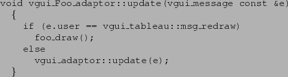
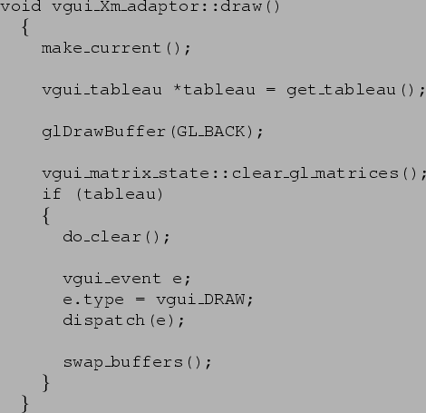

Note that this is the only class that you have to implement in order to use VGUI tableaux. The other classes are needed if you want to use the VGUI pattern to create menus and dialog boxes.
This class is derived from vgui_adaptor. It translates events for the OpenGL drawing area into vgui_events. The most important functions to provide are :
NOTE. If ``Foo'' is some interface derived from X such as Motif or the Athena widget set then the functions in vgui_X/vgui_X_utils may be useful for converting between XEvents and vgui_events.
Once a vgui_event has been constructed it should be sent to the non-virtual vgui_adaptor function ::dispatch.

foo_draw could either be a member function of Foo's OpenGL widget that needs
overriding like FLTK's Fl_Gl_Window::draw method or just a convenient function like
vgui_Xm_adaptor::draw.
